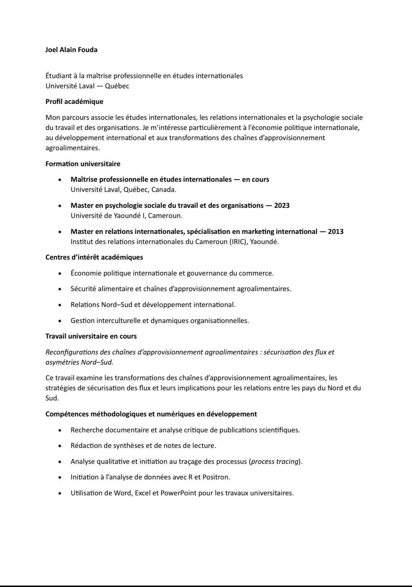

JOEL A. FOUDA
Profil académique.
Mon parcours associe les études internationales, les relations internationales et la psychologie sociale du travail et des organisations. Je m’intéresse particulièrement à l’économie politique internationale, au développement international et aux transformations des chaînes d’approvisionnement agroalimentaires .
Mes compétences
Au fil de mon parcours universitaire, j’ai développé des compétences méthodologiques et numériques qui me permettent d’aborder des questions de recherche avec rigueur. De la recherche documentaire à l’analyse de données, je continue d’enrichir ces outils pour mener des travaux toujours plus solides et approfondis
Mon CV
Vous trouverez ici mon curriculum vitæ, qui présente ma formation, mes centres d'intérêt académiques et les compétences que je développe au fil de mon parcours. Entre relations internationales et psychologie des organisations, il reflète une démarche pluridisciplinaire tournée vers l'économie politique internationale et le développement.

Me joindre
Pour toute question, proposition de collaboration ou simple échange autour de mes travaux, n'hésitez pas à me contacter. Je vous répondrai avec plaisir.